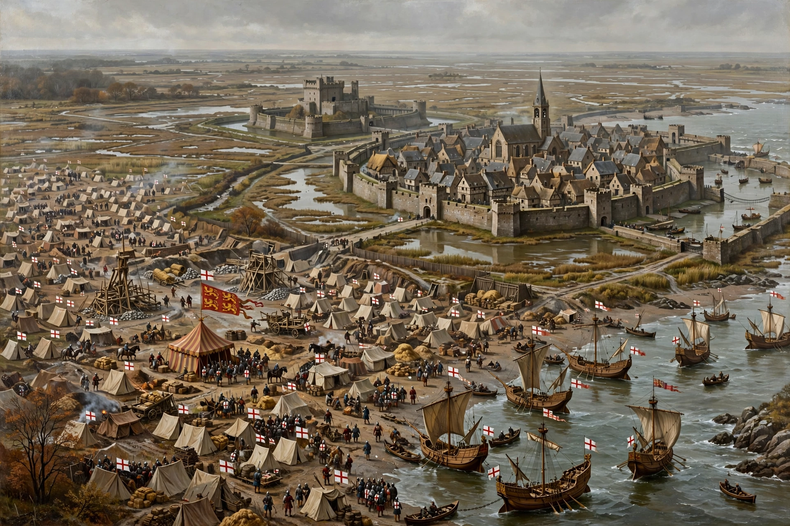

| Siege of Calais | |
|---|---|
| Date | 4 September 1346 – 3 August 1347 |
| Part of | Hundred Years' War |
| Result | English victory; Calais held until 1558 |

The Siege of Calais (1346–47) was a siege of the French Channel port of Calais by Edward III of England following his victory at the Battle of Crécy. It lasted eleven months and ended with the town's surrender on 3 August 1347.
Calais was strongly walled and marsh-guarded; Edward declined costly assaults and instead blockaded it by land and sea, building a fortified camp-town, Villeneuve-la-Hardi. Philip VI's relief army approached in July 1347 but withdrew, and the starving garrison surrendered.
According to Froissart, Edward demanded six leading citizens surrender themselves for execution; Queen Philippa interceded and they were spared. The episode is immortalised in Rodin's sculpture (see also The Thinker) The Burghers of Calais.
Edward repopulated Calais with English settlers. It became England's staple port and a vital bridgehead in France, held for over 200 years until 1558.